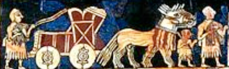
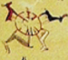

Representing a round settlement, walled and divided by crossroads. Similar settlements are archaeologically attested in Upper Egypt since the earliest periods of urbanization.
𓏒 𓏓 𓊖 𓋓 𓇚 𓇊 𓇈 •court < Kar / KUR 𒆳 𒆠 Gorod vs 𓊕 ⇨ Karnak Nekhen Naukratis Nagar 𓊔 ¬TER
𓄫 𓅱 ⲱⲟⲩ ϣⲏⲟⲩ ≈ Jer in 𓄫 𓅱 𓆷 𓄿 𓅓 𓅓 Jerusalem < 𓈖 𓂋 𓄫 Nağar 𓊖
𓊖 𓏓 𓂋 UR 𒌨 URU 𒌷 φάρσος phársos parts 𓊖 city quarters
Cretan 𔕆 •KAR 𔕈 KA 𐘾 ka 𐀏 KA 𑁣 керла 𔕇 𐀤 𐘿 QE
𓊖 𒆠 IDENTICAL continuum in Indus Valley Harappan script !!!
𔗜 kuʳ
𓊖 UR > ECH in biblical Achsaph 𓇋 𓀁 𓎡 𓊃 𓊪 𓊗 𓇋 𓈉 Aksapi
𓊖 UR > ECH in 𒀝𒈠𒆪𒈾 Agmadana @ Elamite 𐡀𐡇𐡌𐡕𐡀 Aḥməṯā or Ἐκβάτανα
𓊖 UR ≠ ECH in Jericho < 𐎊𐎗𐎃 yrḫ ⇔ Yaraḥ 'moon' or lunar deity Yarikh, for whom the city was an early centre of worship.
𓊖 𓂓𓊖 Kar vs 𓊕 Taur
𓊖 #nwt Novgorod 𒈾𒄖 na-guʳ NAGAR 𓊖 enclave see Uruk
𓊖 as in 𓐍 𓋓 𓂋 𓏏 𓏏 𓀐 :
𓊖 √KVRt ⇔ Kreis circle 𓐍
𓊖 √KVRt ⇔ Cross 𒉽 KUR₂
𓊖 √KVRt ⇔ Quadrat 𒆠
𓊖 √KVRt ⇔ carve 𓊖 قُطْعَة quṭʿa cut of land
𓊖 KurBeith.as > 𓊨𓏏𓊖 cīvitās
𓊖 KurBeith ⴲ=ⴱ+ⵜ B+T
𓊖 KurBeith > ᵏurbis ᵏorbit oppida oppidum 𓃀 ἐπίπεδος (epípedos, “plane”) पद pada ⇔ planet 🪐♁☿♂
𓊖 KurBeith > El Kab 𓇑 𓊖 𓃀 (locality)
𓊖 KurBa "inner circle" ⇔ Korb Krippe
𓊖 court gorod го́род קרית
𓊖 "KUR" 𒌷 עיר ⋍ 𓊨𓏏𓉐 stätte/city/port
𓊖 ⋍ 𒆳 KUR (mountain/land/city) ⋍ 𓈉 𓈊 ⋍ Шkара
𓊖 KUR 𒆠 KI®
𓊖 KUROrt / 𓊖𓏏 город / 4 Court quarters/4 city corners 𒆠KI/UR𒌷/UR𒌴
𓊖 urbit 𒊑𒁉𒌅 re-bi-tu “piazza, square” vs orbit ☑
𓊖 city squared circle 𓊖 :
𓊖 city เขต kèet grid ⇔ گرد gird 𓈎
𓊖 ⇔ 𓂓𓊖 Warka Uruk UR 𒌷 𒌨
𓊖 𓏏 Ort ( final corruption in the Kar series )
𓊖 𓏏 Ort ⇔ 𓉐 𓂋 𓇋 𓇋 𓏏 𓉐 𓏥 port běrtyl part peculiar
𓊖 garrison 𒆠𒆘 garaš₂ "military camp" Akk. karaš karāšu •Kreis 𓊖
ti ≈ 𒆠 ki in 𒉏𒈠𒆠 ≈ Hatamti 𓊖 ⇔ T | | | | | |
ti Teil թաղամաս tʿałamas Stadtteil კვარტალი ḳvarṭali Quartier "city quarter"
ti Teil 𒁖𒄄 dag-gi₄ daggi dangir in fjórðungur *dělьnica "city quarter"
ti τετράγωνο tetrágono tedaharat "city quarter"
𓊖 ≈ 𒆠𒆘 garaš₂ garrison, military camp guerre
𓊖 ≈ 𒀭𒁹𒀭 street 𒋻 SILA calla < 𒌵 tilla
𒊬 ŠAR ⋍ 𒊺𒆸 ŠE.KAR #sakar ☑ !
𒂦 SIR3 शहर śahr city
𒌷𒂍 UR-BIT urbis orbis orbit 𓊖 city
𓊖 √QVRBT⁴ Querbeet ;)
year ?
center medina
nagar 𓂧𓏇𓇌𓊖𓏌𓅃𓏤 Damanhur! #Dmỉ-n-Ḥr.w ⲡϯⲙⲓⲛ̀ϩⲱⲣ [π]]Tīminhōr @ 𓈧
𓊕
𓈎 cairn گرد gird 𓈎𓄿𓄿𓀠 го́рка górka урэкэн kukkula גִּבְעָה givᵍá 𐎂𐎁𐎓 gbʿ colle > Hügel 丘 おか oka "hill" 𐌷𐌻𐌰𐌹𐌽𐌴
𒄭 ḫi 𒄯 ḪAR 𒄭 ŠAR₂ 𒐬 ŠARU 𒄮 SUR 𒊮 SHA₃ ŠA₃ 𒊹 ŠÁR 60 * 60 𓐍 CHR circle KUR 𓊖 …
𓊖𓏌𓅃𓏤 Hur ⇔ 𓅃 horus in
𓂧𓏇𓇌𓊖𓏌𓅃𓏤 Damanhur! #Dmỉ-n-Ḥr.w ⲡϯⲙⲓⲛ̀ϩⲱⲣ [π]]Tīminhōr
𓂧𓏇𓇌𓊖𓏌𓅃𓏤 ᵈHermopolis Parva, Metelis, capital of NL8 𓈧
𔗜 ku® 𓏓 ⇔ 𓂋 corn
𔕆 𔕇 𔕈 Anatolian Hieroglyphs
𔗑 ⋍ 𓐍
𔗑 ⋍ 𔔟 𔔞 𔔙 𔔢 𔔣 𔔤 𔔦 𔔥
𒆳 KUR ⇔ CIR3 𓊖 court > sár™
𒆳 šat 𓊨 𓏏 𓊖 šad mount 𓈉 #ḫst خطه xatte خِطَّة ḵiṭṭa
𒆳 mat 𓊖 medina 𒆳𒈬𒀫 Mu-ZUR Mizraim
𒅕𒁀 er-ba | 𓊖 40 | ኣርባዓ ʾarbaʿa ארבעין arb‘īn אַרְבָּעִים arba'ím
𒄒𒋥𒅈𒁀𒌅 kib-rat ar-ba-tu
𒄒𒋥𒅈𒁀𒌅 the four edges (of the world)
𒆜 KASKAL •cross course 𒉽 KÚRᵒˢ KÚRmes •calla de camino (road) 𒆜 caravan 𓊖
𒆜 •KURAS 𓊖 > RAŠ roaδ 𓈐 road 𒆜
𓉔 *HERd 𓉔𓄿𓂋𓏏𓄜𓏥 ⇔ עֵדֶר Hort <
𓉔 *GHAR ⇨ گھر горт 𐌲𐌰𐍂𐌳 gort घर = Home गृह gare guard gHort
𓉔 *CAR 𓉔𓄿𓅱𓀜 corvee > cover / hair 𓉔𓄿𓀋
𓉔 *court 𓉩/𓉧𓏏𓉐
An old reading tire>cir is supported by this image:

Also see 𓅂 tyw® طير ṭīr theta, tau 𓊖 Djed
𓊖 > Warka
𓊖 cities built "reproducing the model of the universe" as described in ancient Aryan/Iranian spiritual literature, the Vedas and the Avesta! Compare Mandala principle.
𓊖 city circles built to measure time:
𓊖 UR ⇔ 🕓 Uhr 𓊗 hour 𓇳 joure
The city as depicted in the sign 𓊖 was the actual design plan of cities from the pioneers:

Novgorod 𒈾𒄖 na-guʳ NAGAR 𓊖
𓊖 court gorod קרית as an international Wanderword :
Gorod قريت
го́рад m (hórad) град (bg) (grad)
градъ m (gradŭ)
כַּרְכָּא m (karkā) ⇔ Warka/Uruk/Ur => Work
ܟܿܲܪܟܿܵܐ m (karkā) ⇔ Kerker "Kur" = Prison (=> crime…)
Qurā ٱلْقُرَى
kêr ҡала (qala) гӏала (ġala) хула (hula) hiri (Bask)
ქალაქი (ka) kalaki քաղաք (hy) kʿałakʿ
кар (kar) Komi-Zyrian Konkani: xar
עִיר Ghir Ir Ur urbe urbs város oram@Turm
caer gard ⇔ guard
ard-valley m, caayr f @ Manx
ሀገር f (hägär) @ Geez
𒂦 SIR3
शहर (mr) (śahr), नगर (Nagar)
саар (saar), город (gorod) gåårad@Sami
сахар (saxar), горӕт (goræt)
шагьар (šahar) şəhər шаар (ky) (şaar) şäher
шагьар (şahar) şar (ku) (Latn) Sorani: شار (ku) (shar)
শহর (bn) (śôhôr), নগর (nôgôr)
શહેર (gu) (śaher), નગર (gu) (Nagar)
शहर (hi) m (śahar), नगर (hi) (Nagar)
شهر шаҳр šahr 𓈉 𓈊 ⋍ Шkара (Land, city)
شهر шаҳр šahr ⇔ zar shah 𐬑𐬱𐬀𐬚𐬭𐬀 (xšaθra, “kingdom)
شہر m (śahr), نگر (Nagar)
شەھەر (sheher) shahar шаҳр
šak in 𒌔𒆠 akšak
ꠘꠉꠞ (nogor) Nagar ⇔ Novgorod Naukratis? 𓅐
නගරය (si) (nagaraya)
நகரம் (ta) (nakaram)
నగరం (te) (nagaraṃ)
നഗരം (ml) (nagaraṃ)
นคร (th) (ná-kɔɔn),
กรุง (th) (grung)
གྲོང་ཁྱེར (grong khyer),
རྒྱལ་ས (rgyal sa)
Stronger corruptions:
Udmurt: кар (kar) хоорай (hooray) Ort хот (mn) (hot) ош (oš) oraș@Romain Oriya: ଚ୍ହି (chi) ښار (ps) m (ẍâr) شهر (fa) (šahr) ከተማ (kätäma) kent@Turk! (tr), şehir (tr)
қала (kk) (qala) ...
kêrioù => keoded f, keodedoù pl => 𓊖⋍𓊨𓏏𓉐
kota@Indonesian khutha ᡥᠣᡨᠣᠨ (hoton) ciudá cité citât cidade ciudá città cità city cathair cituot ciutat ciudat Stadt Stääd sità site Stätte steed stêd xtat שטאָט f (shtot) cetate zità citad ceaster ceity, ceety sità (vec) f, çità
miestas мѣсто n (město) miasto мі́сто (uk) (místo) mesto mésto město mjasto mji@Somali 町 (まち, machi) magaalo? ܡܕܼܝܼܢܬܿܵܐ məḏīttā מְדִינְתָּא məḏīntā
Mecca = Makkah Umm al-Qurā[26] (أُمّ ٱلْقُرَى, meaning "Mother of all Settlements"
𓊖 late Semitic reading Beith (Bett/Haus/Port/Town) :
𓋆 𓏏 𓊖||(locality) Thebes|Te.Beith=𓏏𓊖
vs Burg: birni býur bajar bajarr@Kurd បុរី borəy@Khmer borg@Island burg by baile mór veye város πόλις (pólis) vil ville viele ìlú vakpaly ... ⇔ basar[market/meat/meet]
city⇔დიდი (didi) dinas (cy)
𓈇 Town táva ṯendint kent 𓈈 tawi (secondary)
thành phố (vi) (城埔), thành (vi) ma.town مَدينَة mədina phố (vi), đô thị (vi) (都市)
Shor: тура (tura)
Sichuan Yi: ꇓꈓ (lur kur)
ទីក្រុង (tii krong) bandar raya
都市 (ja) (とし, toshi), 都会 (ja) (とかい, tokai),
Korean: 도시 (ko) (dosi) (都市 (ko)), 시내 (ko) (sinae) (市內 (ko))
𓏌 urn / nur 𒈾 NA ⇔ Nagar 1 𒆠
𑀡𑀬𑀭 (ṇayara) ⇨ नेर (-ner)
nagara नगर
𓊖 Circle PIE:cvrcvr 𓐍 ⇔ 𓊖 qvatro 4 gates
𓊖 Warkar = Uruk, die UR-Stadt ⇔ workar𓂓 kerker|kur'gaul
𓊖 Dwarka Krishna's city before the deluge
𓊖 KurBeit𓉐 Urbis urban Orbit (Ort,-urs) arba = 4 @ Arab
𓊖 город gorod [Kreis/Rad] KurOrt qvarat 4 ✓
𓊖 Kar=Stadt𓊨 𓐍𓇇𓊖 Stätte steady 𓆓𓏏𓏤𓊽
𓊖 Khara खड़ा = Stand 𓊨𓏏𓉐
𓊖 carts (4-wheeled cars) chariot
𓊖 ⲕⲟⲧ wheel 𓊖 qvart⋍fåhrt Linear B: 𐀏ka 𐀤qe 𐃏rota / krad
𓊖 Cairn 𓈎𓄿𓄿𓀠𓈇𓏤
𓊖 Kreis 𓂋 vs Quadrat 𒆠
𓊖 Geo 𒆠 Karas Ge Geb Gaia 𓅐
𓊖 sumerian quadriga:

𓊖 Kur 𓊎 Zikkurat|https://en.wikipedia.org/wiki/Ziggurat
𓊖 Kur 𓊎 Kurgan|https://en.wikipedia.org/wiki/Kurgan church
𓊖 Kar 𓌨 kârakar (mine/work) 𓂓
𓊖 Ker 𓌨 Kerker (gaol)
𓊖 Car 𓌨 care
𓊖 Gyr 𓌨 Ground
𓊖 Qvr 𓈎𓄿𓀠 «quer» high, tall
𓊖 Ğir 𓋴𓂋𓃱 giraffe ⇔ 𓀠 Hurah 𓎛𓂝𓂝𓀠
𓊖 Circus and Egyptian Cosmos

Maykop culture 4000 BC:

Early roots of this image may go back to Shamanism and göbekli tepe, as does 𓅐 and the city

une covenante :

𓈖 𓎟 𓃀 𓏏 𓍮||basket|µKorbest nuBast NetzBasket 𓃀𓏏𓍮 > nakõ@Aché kaneon@Greek canasta⋍Kanister
𓈖 𓐍 𓃀 𓏏 𓏛||titulary|NagaraBeith™ ^^ 'City Basket' House-of-Vulture𓅐 𓅒 Nekhbet 𓇑 𓃀 𓏌 𓏏 <<<<+++
𓈖 𓐍 𓃀 𓏏 𓏛||titulary|NekroPodis на́зва názva beosztás House-of-Cobras 𓅒
𓈖 𓐍 𓃀 𓏏 𓏴 𓍼||titulary|µKorbest гарчиг garčig engraved / encovert
𓈖 𓐍 𓃀 𓏏 𓏴 𓏛 𓏥||titulary, to cover, overlaid|en.covert +++ anchor: 'City Basket'
Similar to city, town
g-w-r jawara neighborhood جار gār 𐌲𐌰𐍂𐌰𐌶𐌽𐍉 garaznō γείτων comharsa
g-w-r 𐌲𐌰𐍂𐌰𐌶𐌽𐍉 (neighborhood) күрше kürşe
Different reading more like
𓊖 Center Schnur 𓍲 𓈖 𓍢 𓏳 𓐍 khemnur noir nUr corner
𓊖 naura 𓈖𓊖 (Sem: water wheel) Weiler official reading: #nur vs noir 𓐍
𓊖 nagara नगर > #nur enCorbet / Anchor Wat 𓈖 𓐍 𓃀 𓏏 𓏛
𓊖 Naukratis city at water 𓈖
𓊖𓏏 𓏌𓏏 那儿 nàr : jener Ort नगर (Nagar)
囗 nara guk, koku
𓊖 similar sign appearing behind all city names in the Indus Valley Civilisation

bUR, fUR, kUR 𓊖 One of the strongest roots of Eurasian. Ubiquitous in thousands and thousands of city names. Related to Tells and Mountains. 𓊖 As symbol and concept 4-ness paramount in Arian religion.
𓌨 𓊖 Kur 𒆳 court 𒆳 third 𓇾 terra
O49 𓊖 URtu ORT Fort Furt Burg KUReuz KAR.stadt CRoss shûra ⇔ 𐀏 karad 𐃏 qua/qe 𐀤 𐂜 4?
O49 𓊖 URth ⇔ Earth ♁ gaia⋍geo⋍gu古gǔ⋍ge⋍ki⋍'earthu ⼟tu urdu
𓊖𓊖 double cities = tawi 𓈇 (2) towns see egyptian dual -TAN𓌙 ⏚
𓊖 late forms of 'courth' city suffix very corrupted as 𓊖Qus, «-as» ⋍ SaRa 𓇳
(locality) Cusae (El - Kusiyah) 𓈎 𓇋 𓋴 𓊖
Ques.ur Cusae el-Qusiya vs Quesir
𐍉 Ω Ο ᛟ 𓊖 Othal Urtal (original dvelling place) 𓈋
𒃼 GAR3 knob
𓊖 UR ⇔ 🕓 Uhr 𓊗 hour 𓇳 jour 𓉔𓂋𓅱𓇳𓏤⇔ dura dawn 𓇼𓄿𓅱𓇳
𓇽 Duat Dort Droit Durad
Wheel is PIE technology:
why.they.lost.the.wheel
Furthermore, the Turks in early times used carts without roads on the Central Asian steppe, as did the unknown ancient inhabitants of the Sahara Desert.
The word "araba" or arabiya, which is so commonly used today in both Turkish and Arabic denotes a wheeled vehicle 𓊖𓊖𓊖𓊖 Arba = 4 ⇔ Orbit 𓊖
Samarra Bowl (ca. 4000 BC)

The 𓊖 sign is a slightly more neutral symbol than the swastika, though it's history is not very peaceful either. 𓊖 Warkar was related to War and hard work. 𓊖 Kur is related to Kerker (gaol). Things have improved significantly since the formation period, with the exception of an overly zealous destruction of nature.
𒇻 𒈦 𒈧 goat ⇔ quat quadrat ⇔ count
see Kur
𒆜 KASKAL •cross •calla de camino (road) 𒆜 caravan
🕀 cross 𒀱 Nagar 𓃶 aNKar ⚓ 𓋹𓈖𓐍 𒉽𒀭✴𓇼☆* Ankaras Διόνυσος cross 🕂
Novgorod < Nagar[t] < #niwt ?
𓊖 KAR = town kʰɑʁɑkʰ χωριό chorió قرية qarya গ্রাম gram κώμη kṓmē ગામ gām ƙauye Gau
𓊖 KAR = Kuhdorf Kuhle 𓎟𓈋 kylä küla գյուղ gyuł 촌락 chollak
𓊖 KVR = Kuhdorf qvarter כְּפָר kfar գյուղ ɡjuɣ गांव gā̃v Kaff юрт yurt < го́род
𓊖 KVR = Kaff ⇔ chèvre (Schafdorf) כְּפָר cover < 𐎋𐎔𐎗 kpr 𓃶𓃚𓃙 ḫpr
𓊖 KVR = 𐌲𐌰𐍂𐌰𐌶𐌽𐍉 quarters kvarter (neighborhood) قُرْب qurb күрше kürşe جار gār 𓉔 𓄿 𓅱 !
𓊖 KVR = g-w-r جِوَار jiwār 𐌲𐌰𐍂𐌰𐌶𐌽𐍉 garaznō γείτων comharsa 근
𓊖 KVR ⇔ Guard Garden Hort 𓉔
𓊖 KVR ⇔ Cephal Köpfe 𓃾𓃿𓄀𓄄𓄅𓄃𓄆𓄂
The idead of a city 𓊖 was of course only approximated in human implementations, as in Arkaim (OrgHeim 🗿):

and similar:

Earliest copper city in china : Shimao, 石峁 stone-mound
Careful: The Arkaim (ArchaeHeim 🗿) structure consists of three concentric rings of walls and three (ƒ!?) radial streets , reflecting the city of King Yima described in the Rigveda. The foundation walls and the dwellings of the second ring are built according to what some researchers have described as swastika-like patterns; the same symbol is found on various artifacts.
𓊖 KurBeith ⴲ=ⴱ+ⵜ B+T vs ⵀⵍⴱ HLB halb ⵂ
O243 Extended Aegyptus
𒆜 •KURAS 𓊖 > RAŠ roaδ 𓈐 road 𒆜
𓇳 ⋍ 𓊖 in
𓈖 𓇑 𓇑 𓏏 𓇳
𓈖 𓏏 𓊖
Kaneš Qadesh … … … (we postulate that 90% of all cities starting or ending with Ka go back to 𓊖 kar)
𓐠 𓈖 𓎼 𓂋 𓏤 𓈉 | (locality) Babylonia | Sinegar Sinear Sumer Sumger Sunger Bengali!
𓌢 𓎼 𓂋 𓈉 | (locality) Babylonia | Sinegar Sumger Sumer Twaiger
𓌨 𓂋 𓂚 𓄿 𓊖 | Babylon | gar… (syn)gar : 𓌨 bab?
𓃀 𓃀 𓂋 𓏤 𓈉 | Babylon |
𓊖 "shield" kurša@Hittite
𓊖 "Heer" kuršašša- (military) @ Luwian
𔗘 /mi/ 𓊖 𓏏 mat 𒆳 medina < mount 𔖻 mune,mínei "4"
𔗘 /ᵛURHI/ four 𓊖 𔖷 •vier 4 𔖶 #vir man
𒌷 𒁁𒇻𒋾 URU be-lu-ti Cur Belati ≈ Car Pitale > capital city
𓊖 ≈ 𒄈 GIR in
𒄈𒋢𒆠 Girsu 𓊖 (Sumerian Ĝirsu;[1] cuneiform ĝir2-suki 𒄈𒋢𒆠)
capital city of Lagash some 25 km NW of Lagash, at the site of modern Tell Telloh, Dhi Qar Governorate, Iraq.
𓊖 ≈ 𒄆 GI4 × GI4 ≈ 𓎼×𓎼 ? gyro ?
𒄄 GI4 < QUAR 4 in 𒁖𒄄 city quarter 𓊖
𓊖 khūr ≈ 𓅄 hour in
دمنهور Damanhour 𓂧 𓏇 𓇋 𓇋 𓊖 𓏌 𓅄 domain horu "House/City/Settlement of Horus" ⲡϯⲙⲓⲛ̀ϩⲱⲣ תמנחור Temenkhūr
𓊖 ≈ ⴱ/ⵀ B/b Beith in 𓋆 𓏏 𓊖 Thebes THEOʳBEITH (Diospolis)
Kfar כְּפַר "village"
𓎤 Korb @ Koptos 𓎤 𓃀 𓅂 𓇋 𓇋 𓊖